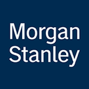

Manfredi Investment
Research & Markets
Equity Research · Informe Institucional
Datos al 3T 2026 (cierre 30 sep 2026)
Datos al 3T 2026 (cierre 30 sep 2026)

MSNYSE · Morgan StanleyCifras fundamentales: comunicado de resultados y Financial Supplement del 3T 2026 (8-K del 14-oct-2026) y 10-Q del trimestre cerrado el 30 de septiembre de 2026 (presentado el 5-nov-2026, con los ratios de capital definitivos), más los comunicados de los siete trimestres anteriores. Requerimientos de capital a la fecha del 10-Q. Precio de mercado al cierre del 6-nov-2026. Este documento es 100% analítico — no constituye una recomendación de compra, venta ni mantenimiento. Ver disclosure completo al pie.
01 — Resumen Ejecutivo
Morgan Stanley reportó el 14 de octubre de 2026 ingresos netos de $20.3 mil millones para el tercer trimestre (+12% interanual, −5% contra el récord de $21.3 mil millones de junio), utilidad neta de $4.9 mil millones (+6%), EPS diluido de $3.03 (+8%), ROE de 17.8% y ROTCE de 22.6%. En nueve meses, el ROTCE es de 25.4% (ROE 19.8%) y en los últimos doce meses, de 24.5% según nuestro cálculo con las cifras oficiales. La eficiencia —gastos no financieros sobre ingresos, donde más bajo es mejor— fue de 67% en el trimestre y de 66% en lo que va del año, contra una meta de la compañía de 70%.
El motor del trimestre cambió de lado. En el primer semestre, Institutional Securities había crecido más de 40%; en el tercer trimestre creció 18% y bajó 9% contra junio, con Equities todavía fuerte (+41%, apoyado en Asia) pero renta fija (−7%) y colocaciones de acciones (−19%) en baja. Wealth Management, en cambio, tuvo el mejor trimestre de su historia: ingresos de $9.1 mil millones (+10%), margen antes de impuestos de 30.4% (30.4% también en nueve meses, contra la meta de 30%), $232 mil millones de activos netos nuevos y $80 mil millones de flujos a cuentas con comisión, el doble que en junio. Investment Management fue el punto débil: ingresos −12% por la reversión de comisiones de éxito (carried interest) de un fondo privado.
La acción cayó de $206.58 (14-sep) a $181.44 (6-nov), −12.2%, y el múltiplo bajó de 3.89x a 3.36x el valor libro tangible. Con eso, el ROTCE que el precio exige pasa de ~35% a ~29% (Sección 13, Método 3): todavía 7.8 puntos más que el mejor año fiscal completo del banco (21.6% en 2025) y 3.9 puntos más que los nueve meses de 2026, que son el período más fuerte de su historia reciente. El blend ponderado de seis métodos da $156.83 por acción, 13.6% por debajo del mercado (en septiembre era $163.20, −21.0%). La brecha se achicó sobre todo porque bajó el precio, no porque subiera el valor: los métodos intrínsecos subieron entre 8% y 11%, pero comparables (Goldman Sachs también cayó) y el consenso (de $236.62 a $211.50) bajaron. La postura sigue en neutral con sesgo cauteloso.
02 — Historia y Evolución
Morgan Stanley nació en 1935 como escisión del negocio de banca de inversión de J.P. Morgan & Co. —la separación forzada por la Glass-Steagall Act de 1933, que obligó a J.P. Morgan a elegir entre banca comercial y banca de inversión—. Durante seis décadas operó como banco de inversión puro, hasta la fusión de 1997 con Dean Witter Discover & Co., que sumó una red minorista de corretaje y la tarjeta Discover (vendida años después) al negocio institucional original. La crisis financiera de 2008 fue el segundo punto de quiebre: para sobrevivir como banco de inversión independiente en medio del colapso de Lehman Brothers y Bear Stearns, Morgan Stanley se convirtió en sociedad holding bancaria (bank holding company) ante la Fed y recibió una inversión de rescate de $9 mil millones de Mitsubishi UFJ Financial Group (MUFG) a cambio de una participación accionaria de aproximadamente 21% —posición que, mediante conversión de instrumentos convertibles y recompras posteriores de la propia compañía sobre el resto del float, representa cerca del 24% del capital (Sección 09), la relación de gobierno corporativo más atípica de todo el panel de bancos de este desk.
Bajo el liderazgo de James Gorman (CEO 2010–2023), Morgan Stanley ejecutó la transformación estructural que define al banco actual: la compra de E*TRADE Financial por aproximadamente $13 mil millones (cerrada en octubre de 2020) y de Eaton Vance por aproximadamente $7 mil millones (cerrada en marzo de 2021) construyeron, en apenas seis meses, el "tercer pilar" de Wealth & Investment Management que al 3T26 genera la mitad de los ingresos de la firma — reduciendo deliberadamente la dependencia histórica del trading y la banca de inversión, mucho más cíclicos. Gorman entregó el cargo de CEO a Ted Pick el 1° de enero de 2024, permaneciendo como Executive Chairman durante ese año; se retiró por completo del directorio a fines de 2024, y Pick asumió también la presidencia del directorio el 1° de enero de 2025.
Utilidad neta atribuible a Morgan Stanley, FY2021–FY2025, y últimos doce meses al 30-sep-2026 (miles de millones de USD). Fuente: 10-K y comunicados de resultados.
La utilidad neta traza una "V" pronunciada: 2021 ($15.0 mil millones) fue el pico de la era Gorman, impulsado por el boom de trading y banca de inversión post-pandemia; 2022 ($11.0 mil millones) y sobre todo 2023 ($9.1 mil millones, el punto más bajo de la serie) reflejan el shock de tasas, una sequía de banca de inversión y los costos de integración de E*TRADE/Eaton Vance; y la recuperación de 2024 ($13.4 mil millones) y 2025 ($16.9 mil millones) coincide con los dos primeros ejercicios de Ted Pick como CEO. Los últimos doce meses a septiembre de 2026 ($20.5 mil millones) superan a cualquier año fiscal completo de la serie. El ROTCE anual siguió el mismo camino: 19.8% en 2021, 15.3% en 2022, 12.8% en 2023, 18.8% en 2024 y 21.6% en 2025 —promedio de 17.7% en los cinco años—, y 25.4% en los nueve meses de 2026.
03 — Modelo de Negocio y Segmentos
Morgan Stanley opera en tres segmentos: Institutional Securities —banca de inversión, trading de acciones (Equity) y renta fija (Fixed Income), y préstamos a empresas e inversores institucionales—, Wealth Management —asesores financieros, la plataforma autodirigida de E*TRADE y los planes de acciones para empleados de empresas (workplace)—, e Investment Management —gestión de activos institucional y de fondos, con Eaton Vance y Parametric—. No es un banco comercial universal: no presta a gran escala a empresas y hogares, y sus depósitos vienen casi enteros de clientes de Wealth Management (barridos de efectivo de las cuentas de inversión). Opera bajo la estructura regulatoria de una sociedad holding bancaria G-SIB, con recargo de capital de 3.0% (Sección 06). Por eso su comparable directo (Sección 08) es Goldman Sachs, y Charles Schwab entra como referencia para la parte de Wealth Management.
| Segmento (3T26) | Ingresos netos | % del total1 | Var. YoY | Margen pre-tax | ROTCE |
|---|---|---|---|---|---|
| Institutional Securities | $10.03B | 48.8% | +18% | 34.6% | 21% |
| Wealth Management | $9.07B | 44.1% | +10% | 30.4% | 53% |
| Investment Management | $1.46B | 7.1% | −12% | 17.8% | 99% |
| Total firma (con eliminaciones) | $20.34B | 100% | +12% | 31.9% | 22.6% |
Fuente: Financial Supplement del 3T26, páginas 1 y 5-8. 1Sobre la suma de los tres segmentos ($20.55B); las eliminaciones intersegmento restan $215M. El ROTCE por segmento es el que publica la compañía, con capital asignado por su modelo interno (Required Capital); el de Wealth e Investment Management es muy alto porque casi todo el goodwill de E*TRADE y Eaton Vance queda fuera del capital tangible: es útil para comparar trimestres de un mismo segmento, no para comparar segmentos entre sí. En septiembre este informe decía que la compañía no publica ROE por segmento: sí lo publica (página 5-8 del supplement).
Ingresos netos por segmento, 3T 2026 (miles de millones de USD). Wealth Management ya está a menos de $1 mil millones de Institutional Securities.
El ingreso neto de intereses (NII) fue de $3.25 mil millones en el trimestre, 16.0% de los ingresos de la firma (14.5% en los últimos doce meses), contra cerca de 44% en JPMorgan. El resto son comisiones de gestión de activos ($7.25 mil millones, la línea más grande y la más estable), trading ($5.60 mil millones), banca de inversión, comisiones de corretaje e inversiones. El NII creció 30% interanual y 17% contra junio, por más préstamos en Wealth Management y por más depósitos de barrido promedio, con un costo promedio de depósitos de 2.72% (2.54% en junio).
04 — Desarrollos Recientes y Perspectiva
| Wealth Management | 3T25 | 2T26 | 3T26 | Var. YoY |
|---|---|---|---|---|
| Ingresos netos | $8.23B | $8.86B | $9.07B | +10% |
| Comisiones de gestión de activos | $4.79B | $5.26B | $5.54B | +16% |
| NII del segmento | $1.99B | $2.25B | $2.23B | +12% |
| Margen antes de impuestos (meta 30%) | 30.3% | 30.5% | 30.4% | — |
| Activos netos nuevos | $81.0B | $148.1B | $232.4B | +187% |
| Flujos a cuentas con comisión (fee-based) | $41.9B | $39.1B | $80.5B | +92% |
| Activos de clientes de Wealth Management | $7.05T | $8.08T | $8.43T | +20% |
| Préstamos del banco (canal Wealth) | $173.9B | $195.7B | $201.1B | +16% |
| Depósitos (canal Wealth, incluye E*TRADE) | $398B | $436B | $465B | +17% |
Fuente: Financial Supplement 3T26, páginas 6-7 y 10. Margen = resultado antes de impuestos / ingresos netos del segmento. El 3T25 incluía $206M de ganancias de las coberturas del plan de compensación diferida (DCP), que desde 2026 ya no pasan por ingresos.
Las cuatro cifras que la compañía usa para medir el segmento salieron bien. El margen fue de 30.4%, sobre la meta de 30% en los tres trimestres de 2026 (30.4% en nueve meses, contra 28.5% en los nueve meses de 2025). Los activos netos nuevos fueron récord, aunque la propia compañía aclara que poco más de la mitad vino de salidas a bolsa de empresas cuyos empleados tienen sus acciones en el canal workplace: es un flujo real pero no recurrente al mismo ritmo, y conviene leer el promedio de los últimos cuatro trimestres ($155 mil millones) antes que el pico. Los flujos a cuentas con comisión, que son los que generan ingreso recurrente, se duplicaron e incluyeron un mandato de un plan de retiro corporativo. Y los activos de clientes de Wealth e Investment Management sumados llegaron a $10.5 billones, por encima de la meta de "$10 billones o más" que la compañía fijó en enero de 2025 (en septiembre, este informe atribuía $9.3 billones solo a Wealth Management: esa cifra era la suma de los dos segmentos a diciembre de 2025).
Wealth Management: activos netos nuevos y flujos a cuentas con comisión por trimestre, 4T24–3T26 (miles de millones de USD). Fuente: Financial Supplements.
| Institutional Securities | 3T25 | 2T26 | 3T26 | Var. YoY |
|---|---|---|---|---|
| Asesoría (M&A) | $684M | $798M | $887M | +30% |
| Colocación de acciones | $652M | $851M | $525M | −19% |
| Colocación de deuda | $772M | $788M | $747M | −3% |
| Banca de inversión | $2,108M | $2,437M | $2,159M | +2% |
| Equity (trading de acciones) | $4,116M | $6,300M | $5,799M | +41% |
| Fixed Income (FICC) | $2,169M | $2,455M | $2,011M | −7% |
| Ingresos netos del segmento | $8,523M | $11,040M | $10,029M | +18% |
Fuente: Financial Supplement 3T26, página 5. El segmento tuvo una provisión de $141M, que incluye $105M de castigos de préstamos corporativos e inmobiliarios comerciales ya reservados en trimestres anteriores.
Equities siguió siendo la franquicia líder: $5.8 mil millones, +41% interanual, con fuerza en todas las regiones y sobre todo en Asia (los ingresos de Asia de toda la firma crecieron 55%). Renta fija cayó 7% por crédito —productos securitizados— y commodities. En banca de inversión, la asesoría creció 30% por más fusiones cerradas en América, pero las colocaciones de acciones cayeron 19% por menos salidas a bolsa y bloques. Contra Goldman Sachs, que reportó el día anterior, Morgan Stanley creció menos en el trimestre: Goldman subió 72% en Equities y 21% en banca de inversión (la comparación completa, con JPMorgan y Bank of America, está en la Sección 08).
Los activos administrados o supervisados llegaron a $2.05 billones (+13% interanual), con flujos netos de largo plazo de $15.8 mil millones, todos en renta fija y alternativos (los fondos de acciones tuvieron salidas por $9.4 mil millones). Las comisiones de gestión crecieron 2%, a $1.57 mil millones, pero los ingresos del segmento cayeron 12% porque se revirtieron comisiones de éxito ya devengadas de un fondo privado (−$106 millones en la línea de ingresos por desempeño). El margen bajó a 17.8% desde 22.0%.
05 — Estados Financieros
| Métrica | 1T26 | 2T26 | 3T26 | 9M26 | TTM |
|---|---|---|---|---|---|
| Ingresos netos | $20.58B | $21.35B | $20.34B | $62.27B | $80.16B |
| Ingreso neto de intereses (NII) | $2.70B | $2.78B | $3.25B | $8.73B | $11.59B |
| Gastos no financieros | $13.47B | $13.90B | $13.71B | $41.09B | $53.20B |
| Eficiencia (más bajo = mejor; meta 70%) | 65.5% | 65.1% | 67.4% | 66.0% | 66.4% |
| Provisión para pérdidas de crédito | $98M | $98M | $148M | $344M | $362M |
| Utilidad neta atribuible a MS | $5.57B | $5.58B | $4.91B | $16.06B | $20.45B |
| EPS diluido | $3.43 | $3.46 | $3.03 | $9.93 | $12.60 |
| ROE | 21.0% | 20.7% | 17.8% | 19.8% | 19.1%1 |
| ROTCE (meta 20%) | 27.1% | 26.6% | 22.6% | 25.4% | 24.5%1 |
Fuente: comunicados y Financial Supplements de 4T25 a 3T26. Trimestres y 9M: cifras oficiales. 1TTM (4T25-3T26): cálculo propio, utilidad para accionistas comunes ($19.85B) sobre el patrimonio promedio implícito en el ROE/ROTCE oficial de cada trimestre. Correcciones respecto de septiembre: la provisión de 1T26 y 2T26 fue de $98M en ambos trimestres (el informe decía $82M y $110M) y el ROE de 1T26 (21.0%) sí fue publicado por la compañía.
Los tres ROTCE cuentan la misma historia desde ángulos distintos. El del trimestre (22.6%) es el más bajo de 2026 porque Institutional Securities bajó 9% contra junio e Investment Management tuvo la reversión de carried interest. El de nueve meses (25.4%) es el mejor de la historia reciente del banco para ese período (21.6% en los nueve meses de 2025). El de los últimos doce meses (24.5%) es el que usa la Sección 13 para anclar el primer año de proyección, junto con el promedio de los últimos ocho trimestres (22.9%). Los tres están arriba de la meta de 20%, y ninguno se acerca al ~29% que exige el precio.
La brecha entre ROE (17.8%) y ROTCE (22.6%) —casi 5 puntos— viene del goodwill e intangibles de E*TRADE y Eaton Vance ($22.9 mil millones). ROTCE es la métrica que usa la industria y la que usa la compañía para su meta, pero el ROE recuerda que el capital que efectivamente se pagó por esas adquisiciones también tiene un costo.
ROTCE y ROE trimestrales oficiales, 4T24–3T26. La meta de la compañía es un ROTCE de 20%.
Eficiencia trimestral (gastos no financieros / ingresos netos), 4T24–3T26. Más bajo es mejor; la meta de la compañía es 70%.
La eficiencia subió de 65.1% a 67.4% en el trimestre porque los gastos no salariales crecieron 20% interanual —más gastos de ejecución en trading, tecnología y marketing— mientras los ingresos bajaban contra junio. En nueve meses sigue en 66%, cuatro puntos mejor que la meta de 70% y tres puntos mejor que los nueve meses de 2025 (69%). La compensación fue de 39% de los ingresos.
06 — Balance, Calidad de Activos y Capital Regulatorio
| Métrica | 30-sep-2025 | 30-jun-2026 | 30-sep-2026 |
|---|---|---|---|
| Activos totales | $1.365T | $1.675T | $1.692T |
| Préstamos | $277.3B | $315.7B | $328.4B |
| Depósitos | $405.5B | $446.1B | $478.4B |
| Deuda de largo plazo | $324.1B | $383.2B | $378.1B |
| Patrimonio común | $100.2B | $106.6B | $107.4B |
| Goodwill e intangibles | $22.8B | $23.0B | $22.9B |
| Valor libro por acción (BVPS) | $62.98 | $67.80 | $68.59 |
| Valor libro tangible por acción (TBVPS, oficial) | $48.64 | $53.18 | $53.96 |
Fuente: Financial Supplement 3T26, página 3, y 10-Q del 3T26. La deuda de largo plazo coincide con el tag LongTermDebt de XBRL una vez descontadas las repeticiones del mismo dato en cada 10-Q posterior. El TBVPS es el oficial de la compañía (patrimonio común tangible / acciones en circulación al cierre) y es el que usa la Sección 13. En septiembre se mostraban préstamos netos de $289.3B y goodwill de $17.1B; las cifras de esta tabla son las del supplement (préstamos totales y goodwill más intangibles).
La provisión del trimestre fue de $148 millones ($103 millones sobre préstamos y $45 millones sobre compromisos no desembolsados), casi toda en Institutional Securities y explicada, según la compañía, por el crecimiento de los préstamos corporativos y de financiamiento con garantía. Los castigos netos (net charge-offs) fueron de $106 millones, casi todos en préstamos corporativos e inmobiliarios comerciales que ya estaban reservados: la reserva para préstamos quedó prácticamente igual ($1,248 millones a $1,244 millones), lo que significa que la provisión repuso lo castigado, sin construir colchón adicional. La reserva total es de $2.07 mil millones (0.4% de los préstamos para mantener, 0.2% en Wealth Management y 0.9% en Institutional Securities), muy por debajo de un banco comercial porque el grueso de la cartera son préstamos con garantía de valores ($123.8 mil millones) e hipotecas a clientes de patrimonio ($77.3 mil millones). El riesgo de crédito está concentrado en los préstamos corporativos e inmobiliarios para mantener de Institutional Securities ($16.9 mil millones, con reservas de 2.7% y 4.2%).
| Al 30-sep-2026 (10-Q, definitivo) | Actual | Requerido | Colchón |
|---|---|---|---|
| CET1 — enfoque estándar | 14.9% | 11.8% | 3.1 pts |
| CET1 — enfoque avanzado | 16.3% | 10.0% | 6.3 pts |
| Tier 1 — estándar | 16.6% | 13.3% | 3.3 pts |
| Apalancamiento Tier 1 | 6.0% | 4.0% | 2.0 pts |
| Apalancamiento suplementario (SLR) | 4.8% | 3.5% | 1.3 pts |
Fuente: 10-Q del 3T26 (CET1 $88,831M; RWA estándar $595,983M y avanzado $546,181M; exposición suplementaria $2.04T). El comunicado del 14-oct daba RWA estándar de $595.8B preliminar y apalancamiento Tier 1 de 5.9%; el 10-Q los dejó en $596.0B y 6.0%. Requerido estándar = mínimo 4.5% + SCB 4.3% + recargo G-SIB 3.0% (colchón anticíclico en 0%). Requerido avanzado = 4.5% + colchón fijo 2.5% + G-SIB 3.0%. SLR requerido = 3.0% + 0.5% de colchón eSLR (regla adoptada anticipadamente el 1-ene-2026).
El CET1 estándar quedó en 14.9%, igual que en junio, aunque los activos ponderados por riesgo crecieron 8% en el año (+$43 mil millones, sobre todo por préstamos corporativos y de real estate residencial, derivados de acciones y securitizaciones). Contra el requerimiento de 11.8%, el colchón es de 3.1 puntos, unos $18.5 mil millones de capital por encima del mínimo. El requerimiento no cambió el 1 de octubre: la Reserva Federal adoptó el 30 de septiembre una regla nueva que mueve la entrada en vigencia de cada SCB al 1 de enero del año siguiente al stress test, y Morgan Stanley informa que su SCB sigue en 4.3% hasta el 31 de diciembre de 2027; el próximo saldría del stress test de 2027 y, desde 2029, el SCB promediará los dos últimos tests. El recargo G-SIB es de 3.0% (la Fed propuso en marzo de 2026 cambiar su cálculo, con efecto todavía sin fecha). El punto más ajustado no es el CET1 sino el apalancamiento: el SLR bajó de 5.5% a 4.8% en un año porque el balance creció 24%, aunque sigue 1.3 puntos sobre el 3.5% requerido.
Ratios de capital al 30-sep-2026 contra su requerimiento (10-Q). El colchón estándar de 3.1 puntos es el que limita el retorno de capital.
07 — Retorno de Capital
| Métrica | Valor |
|---|---|
| Dividendo trimestral (desde el pagado el 14-ago-2026) | $1.15/acción (antes $1.00) |
| Autorización de recompra (anunciada 24-jun-2026, desde 3T26) | $20,000M, sin vencimiento |
| Recompras 3T26 | $1,540M (7M acciones, a $212.74 promedio) |
| Recompras TTM (4T25-3T26) | $6,290M |
| Dividendos comunes declarados TTM | $6,553M |
| Payout de dividendo (sobre utilidad común TTM $19.85B) | 33.0% |
| Payout total TTM (dividendos + recompras) | 64.7% |
| Payout total 3T26 | 70.4% |
Fuente: comunicados 4T25-3T26 (recompras) y XBRL DividendsCommonStock de los 10-Q y del 10-K 2025 (dividendos declarados). Cálculo propio: Morgan Stanley no publica un payout total. Correcciones respecto de septiembre: el primer dividendo de $1.15 se pagó el 14-ago-2026 (no en noviembre) y la autorización de $20,000M se anunció el 24-jun-2026.
El payout total subió de ~61% en septiembre a 64.7%, y fue de 70% en el tercer trimestre. La brecha con el payout de dividendo (33%) es de 32 puntos, por eso el Método 1 de la Sección 13 descuenta el payout total y no solo el dividendo. El ritmo de recompras se mantuvo en ~$1.5 mil millones por trimestre aunque la acción estaba más cara ($212.74 promedio contra $145.77 un año antes): a 3.4-3.9 veces el valor libro tangible, cada recompra reduce levemente el TBVPS, aunque sigue sumando al EPS. Con un colchón de 3.1 puntos que se mantuvo estable mientras los activos ponderados por riesgo crecían 8%, el banco puede sostener este payout; la diferencia con Goldman Sachs, que tuvo que bajar recompras de $5 mil millones a $3 mil millones por trimestre con un colchón de 1.0 punto, es clara.
08 — Comparables de Industria
El comparable directo de Morgan Stanley es Goldman Sachs, el otro banco de inversión G-SIB de EE.UU., ya actualizado al 3T26 en este panel. JPMorgan y Bank of America no son comparables de valuación —son bancos comerciales cuyo negocio depende del margen de intereses— pero sí compiten directamente en trading y banca de inversión, y se incluyen solo en esa tabla. Charles Schwab entra como referencia para Wealth Management.
| Compañía (6-nov-2026) | P/TBV | P/E FY27E | ROTCE 3T26 | ROTCE 9M26 | Eficiencia 9M | CET1 (colchón) |
|---|---|---|---|---|---|---|
| Morgan Stanley (MS) | 3.36x | 13.3x | 22.6% | 25.4% | 66.0% | 14.9% (3.1 pts) |
| Goldman Sachs (GS) | 2.54x | 11.7x | 20.5% | 22.4% | 59.4% | 12.4% (1.0 pts) |
| Charles Schwab (SCHW, referencia) | 6.12x | 12.2x1 | — | — | — | — |
Precios de cierre del 6-nov-2026. MS: TBVPS oficial $53.96, EPS FY27E de consenso $13.67. GS: TBVPS oficial $341.43, EPS FY27E $74.25, ROTCE, eficiencia y CET1 del informe de GS de este panel (comunicado del 13-oct y 10-Q del 2-nov). 1SCHW: P/TBV y P/E forward de stockanalysis.com, no verificados contra los filings de Schwab; ROE informado de 21.1%.
P/TBV al 6-nov-2026. Morgan Stanley cotiza con una prima de 33% sobre Goldman Sachs; Schwab, un modelo con mucho menos capital por unidad de ingreso, cotiza muy por encima de ambos.
| 3T26 (millones de USD) | Banca de inversión | vs 3T25 | Equities | vs 3T25 | FICC | vs 3T25 |
|---|---|---|---|---|---|---|
| Morgan Stanley | 2,159 | +2% | 5,799 | +41% | 2,011 | −7% |
| Goldman Sachs | 3,224 | +21% | 6,441 | +72% | 3,471 | −1% |
| JPMorgan (CIB) | ~3,000 | +14% | Markets ~10,300 (+15%): Equity +49% | Fixed Income −4% | ||
| Bank of America | ~1,800 | −11% | Trading ~5,100 (−5%): acciones +11% | Renta fija −17% | ||
MS: comunicado del 14-oct-2026. GS, JPM y BAC: informes actualizados al 3T26 de este panel (gs.html, jpm.html, bac.html). JPM y BAC no publican la apertura en dólares con la misma definición; las definiciones de cada banco no son idénticas.
El tercer trimestre fue de las acciones en toda la industria —los cuatro crecieron en Equities y todos bajaron o quedaron planos en renta fija—, pero Morgan Stanley creció menos que Goldman Sachs y que JPMorgan en Equities (+41% contra +72% y +49%) y en banca de inversión (+2% contra +21% y +14%); su mejor trimestre de Equities del año fue el segundo ($6.3 mil millones), no el tercero. Esto no cambia la tesis, porque la mitad del ingreso de Morgan Stanley ya no depende de esa mesa; pero sí cambia la lectura de la prima: Morgan Stanley cotiza 33% por encima de Goldman Sachs en P/TBV con un ROTCE apenas 2-3 puntos superior y una eficiencia peor (66% contra 59%). Lo que el mercado paga es la estabilidad de Wealth Management —comisiones de gestión de $5.5 mil millones por trimestre, más previsibles que el trading— y el colchón de capital, que es el triple que el de Goldman Sachs. Schwab, a 6.1x valor libro tangible, muestra hasta dónde puede llegar el múltiplo de un negocio de patrimonio puro, pero no entra al blend: su estructura de capital y su negocio de depósitos no son comparables.
09 — Gobierno Corporativo y Estructura Accionaria
Fuentes: Banking Dive, Bloomberg, Morningstar/fintel.io, MarketBeat (ownership); strategic update del 15-ene-2026 y 10-Q del 3T26 (metas); comunicados de resultados. Ownership y compensación sin cambios respecto de septiembre (no hay un nuevo proxy desde entonces).
La posición de MUFG es la relación de gobierno corporativo más atípica del panel: un banco extranjero tiene cerca de una cuarta parte del capital de Morgan Stanley desde hace casi dos décadas, sin control operativo —el acuerdo de pasividad con la Reserva Federal existe para permitir la inversión sin convertir a Morgan Stanley en una subsidiaria de facto de un banco japonés—. Es una alianza de capital de muy largo plazo más que la posición de un inversor pasivo, y conviene distinguirla de las de Vanguard o BlackRock.
Con las cuatro metas cumplidas, la pregunta de gobierno pasa a ser qué metas siguen. La compañía describe las actuales como objetivos "en un entorno de mercado normal"; si el próximo strategic update (habitualmente en enero, con los resultados del cuarto trimestre) las sube, sería una señal de que la gerencia considera estructural el nivel de 2026. Si las mantiene, el mensaje es el contrario: que 25% de ROTCE es un buen año, no el nuevo piso.
10 — Registro de Riesgos
| Riesgo | Descripción | Severidad |
|---|---|---|
| Reversión del ciclo de mercados de capitales | Institutional Securities ya bajó 9% contra junio y la renta fija y las colocaciones de acciones cayeron interanualmente. El segmento todavía aporta casi la mitad de los ingresos: un año de mercados normales devolvería el ROTCE hacia la zona de 18%-20% de 2024-2025. | Alta |
| Múltiplo exigente | Aun después de bajar 12%, la acción cotiza a 3.36x valor libro tangible: el precio exige ~29% de ROTCE sostenido. Cualquier decepción puede comprimir el múltiplo más de lo que se mueven las estimaciones. | Alta |
| Activos netos nuevos no recurrentes | Poco más de la mitad de los $232B récord del 3T26 vino de salidas a bolsa de empresas con planes de acciones en el canal workplace. Si el mercado de IPOs se enfría, los flujos vuelven al promedio de ~$100-150B por trimestre. | Media |
| Apalancamiento y crecimiento del balance | Los activos totales crecieron 24% en un año y el SLR bajó de 5.5% a 4.8% (requerido 3.5%). Si el balance sigue creciendo a ese ritmo, el límite al retorno de capital puede pasar a ser el apalancamiento, no el CET1. | Media |
| Basel III Endgame y recargo G-SIB | La Fed reabrió en marzo de 2026 la propuesta de Basilea III (con un nuevo cálculo de RWA para bancos de categoría I y II) y la del recargo G-SIB, ambas sin fecha de vigencia. Desde 2029 el SCB promediará dos stress tests. | Media (largo plazo) |
| Tasas y costo de los depósitos | El NII creció 30% interanual por préstamos y depósitos de barrido; el costo promedio de depósitos subió de 2.54% a 2.72% en el trimestre. Recortes de la Fed comprimirían ese spread; un aumento de la competencia por depósitos, también. | Media |
| Crédito corporativo e inmobiliario comercial | Los $106M de castigos del trimestre se concentraron en préstamos corporativos e inmobiliarios comerciales de Institutional Securities, la parte de la cartera con reservas de 2.7%-4.2%. El libro corporativo creció 45% en un año. | Baja-Media |
| Concentración accionaria de MUFG | Cualquier cambio en la relación estratégica (venta parcial, renegociación del acuerdo) sería un evento de alto impacto. | Baja |
11 — Catalizadores
| Fecha | Evento |
|---|---|
| 14 Oct 2026 | Resultados del 3T26, desarrollados en este informe (10-Q presentado el 5-nov-2026). |
| 13 Nov 2026 | Pago del dividendo de $1.15 por acción (registro al 30-oct-2026). |
| En curso | Ejecución de la autorización de recompra de $20,000M (~$1.5B por trimestre en 2026). |
| Mediados de ene 2027 (estimado) | Resultados del 4T26 y del año 2026, y probable strategic update: si la compañía sube sus metas (ROTCE 20%, eficiencia 70%, margen WM 30%, $10 billones de activos) después de cumplirlas, sería el catalizador más directo para el Método 3 de la Sección 13. |
| 2027 (sin fecha) | Reglas finales de Basilea III y del recargo G-SIB propuestas en marzo de 2026. |
| Jun 2027 (estimado) | Stress test de la Fed de 2027: define el SCB que regiría desde el 1-ene-2028 (el actual, 4.3%, sigue hasta el 31-dic-2027). |
12 — Modelo Financiero Proyectado y Momentum de Estimados
| Métrica | TTM (a sep-26) | FY2026E | FY2027E |
|---|---|---|---|
| Ingresos netos | $80.16B (real) | $82.47B | $86.64B |
| Var. YoY | — | +17.3% | +5.1% |
| EPS diluido | $12.60 (real) | $12.89 | $13.67 |
| Var. YoY EPS | — | +26.3% | +6.0% |
Fuente: stockanalysis.com (S&P Global), 6-nov-2026. El consenso FY2026E implica un cuarto trimestre de ~$2.96 de EPS (los nueve meses suman $9.93). En septiembre: FY26E $12.97 y FY27E $13.64, es decir, revisiones casi nulas tras el 3T26 (−0.6% y +0.2%).
| Métrica | Sep-2026 | Nov-2026 |
|---|---|---|
| Analistas | 25 | 26 |
| Strong Buy / Buy / Hold / Sell / Strong Sell | 9 / 2 / 12 / 1 / 1 | 9 / 2 / 14 / 0 / 1 |
| Precio objetivo promedio | $236.62 | $211.50 |
| Rango | $184 – $262 | $185 – $262 |
Fuente: stockanalysis.com (S&P Global), 14-sep-2026 y 6-nov-2026. La mediana de nov-2026 es $206.50.
Las estimaciones de utilidad casi no se movieron, pero el precio objetivo promedio bajó 10.6%, de $236.62 a $211.50: los analistas no recortaron lo que esperan que gane el banco, sino el múltiplo que están dispuestos a pagar por esa utilidad. El objetivo promedio queda 16.6% arriba del precio, y 14 de 26 analistas tienen "Hold". El consenso espera que el EPS crezca solo 6% en 2027, después de +26% en 2026: no extrapola el ritmo de este año.
13 — Valuación: Métodos y Fair Value
Mismo marco que el resto del panel de bancos: un modelo de descuento de dividendos de payout total, un modelo de
ingreso residual anclado en el valor libro tangible oficial, el P/TBV justificado por el ROTCE, comparables
(Goldman Sachs), reversión histórica del propio múltiplo y el consenso. Sin WACC: solo costo de equity (CAPM).
Todos los números de esta sección salen de un script
(.claude/skills/informe-bancos/modelos/ms/valuacion.py), que además reproduce el caso Base de
septiembre: el P/TBV justificado coincide al centavo, el RIM Base da $120.82 contra $119.63 publicados (+1.0%) y
el DDM Base $121.97 contra $122.31 (−0.3%); el blend de septiembre se reproduce exacto con los valores
publicados ($163.20).
Costo de equity (CAPM): Rf 4.86% (Treasury 10 años, 6-nov-2026) + beta 1.22 (5 años, stockanalysis.com) × ERP 5.0% = 10.96% → 11.0% Base; Bear 12.0%; Bull 10.0%. Septiembre usaba 11.5% con un beta de ~1.30 que el propio informe marcaba como "no verificado"; con el beta verificado, el COE baja 0.5 puntos.
Los métodos 2 y 3 dependen de un ROTCE de largo plazo. Usamos 20%, el mismo que en septiembre, y lo elegimos por tres razones que coinciden: es la meta de la compañía "a través del ciclo y en un entorno de mercado normal"; es el promedio de los dos últimos años fiscales completos (2024: 18.8%, 2025: 21.6%; promedio 20.2%), que es la ventana del régimen actual según la regla de la skill; y queda por encima del promedio de los cinco años 2021-2025 (17.7%), que incluye el mínimo de 2023 (12.8%). No usamos el 25.4% de los nueve meses de 2026 porque es un solo año, con un ciclo de mercados de capitales muy favorable. El primer año de proyección sí se ancla en lo reciente: 23% en el RIM, entre el promedio de los últimos ocho trimestres (22.9%) y el ROTCE de los últimos doce meses (24.5%), y converge al 20% en el año 5.
Descuenta el payout total (dividendos más recompras) sobre el EPS de los últimos doce meses ($12.60), a 5 años más valor terminal. El Base ancla el año 1 en el payout total real (64.7%, Sección 07) y en el crecimiento que espera el consenso para 2027 (+8.5% sobre el EPS TTM); Bear y Bull no cambian respecto de septiembre.
| Supuesto | Bear | Base | Bull |
|---|---|---|---|
| Crecimiento del EPS (año 1 → año 5) | 3% (const.) | 8.5% → 6% | 14% → 8% |
| Payout total (año 1 → año 5) | 40% (const.) | 65% → 68% | 72% → 78% |
| Costo de equity | 12.0% | 11.0% | 10.0% |
| Crecimiento terminal | 2.5% | 3.2% | 3.8% |
| % del valor desde el terminal | 64% | 71% | 78% |
| Fair value por acción | $55.51 | $133.70 | $221.86 |
El Bear es un escenario de estrés: payout de 40% —muy por debajo de cualquier trimestre reciente— y EPS que crece 3% por año. El Base ($133.70, contra $122.31 en septiembre) sube por el EPS más alto, el payout real más alto y el COE más bajo. El Bull ($221.86) es el único escenario de los métodos intrínsecos que supera el precio de mercado, y requiere sostener el payout de 72%-78% y un crecimiento de EPS de 14% en el primer año.
Parte del valor libro tangible oficial ($53.96) y suma el valor presente del exceso de retorno de cada año —ROTCE menos costo de equity, aplicado sobre el capital tangible del año anterior—. El Base va de 23% a 20% de ROTCE; el capital tangible crece 10% → 7% por año (el TBVPS creció 10.9% en los últimos doce meses).
| Supuesto | Bear | Base | Bull |
|---|---|---|---|
| ROTCE (año 1 → año 5) | 15% → 13% | 23% → 20% | 25% → 22% |
| Crecimiento del TBVPS (año 1 → año 5) | 4% → 2% | 10% → 7% | 13% → 9% |
| Costo de equity | 12.0% | 11.0% | 10.0% |
| Crecimiento terminal | 2.5% | 3.2% | 3.8% |
| % del valor en exceso del libro que viene del terminal | 47% | 68% | 75% |
| Fair value por acción | $62.02 | $132.33 | $192.26 |
El Bear deja el ROTCE en 13%, el nivel del peor año de la serie (2023). El Base ($132.33, contra $119.63 en septiembre) supone que el ROTCE actual converge a la meta de 20%. Incluso el Bull, con 22% de ROTCE para siempre —por encima del mejor año fiscal completo—, queda en $192.26, apenas 6% arriba del precio.
| COE \ g terminal | 2.2% | 2.7% | 3.2% | 3.7% | 4.2% |
|---|---|---|---|---|---|
| 10.0% | $143.50 | $148.05 | $153.26 | $159.31 | $166.39 |
| 10.5% | $134.10 | $137.83 | $142.07 | $146.94 | $152.58 |
| 11.0% | $125.78 | $128.86 | $132.33 | $136.28 | $140.81 |
| 11.5% | $118.38 | $120.92 | $123.78 | $127.00 | $130.66 |
| 12.0% | $111.74 | $113.85 | $116.21 | $118.85 | $121.82 |
RIM del caso Base (mismas trayectorias de ROTCE y TBVPS, TBV0 $53.96) recalculado para cada combinación; la celda marcada reproduce el Base ($132.33). Ni en la esquina más favorable (COE 10.0%, g 4.2% → $166.39) el modelo llega al precio de mercado ($181.44).
P/TBV justificado = (ROTCE − g) / (Costo de equity − g), con el mismo ROTCE de largo plazo del RIM y
el COE y la g de cada escenario (misma convención que en septiembre):
| Escenario | ROTCE sostenible | COE / g | P/TBV justificado | Fair value (TBVPS $53.96) |
|---|---|---|---|---|
| Bear | 13% | 12.0% / 2.5% | 1.11x | $59.64 |
| Base | 20% | 11.0% / 3.2% | 2.15x | $116.22 |
| Bull | 22% | 10.0% / 3.8% | 2.94x | $158.40 |
La lectura inversa es la más útil: resolviendo la misma fórmula para el múltiplo de mercado (3.36x, con COE 11.0% y g 3.2%), el precio actual exige un ROTCE sostenido de ~29.4%. En septiembre exigía ~35%. La exigencia bajó porque bajó el precio (y, en menor medida, el COE), no porque el banco haya demostrado más: 29.4% está 7.8 puntos arriba del mejor año fiscal completo (21.6% en 2025), 4 puntos arriba de los nueve meses de 2026 (25.4%) y 9.4 puntos arriba de la meta de la compañía. Para que el precio del 6-nov-2026 sea "justo" con este marco, el trimestre más fuerte de la historia del banco (27.1%, 1T26) tendría que ser el promedio permanente, y algo más.
| Enfoque | Múltiplo de GS | Precio implícito MS |
|---|---|---|
| P/TBV × TBVPS de MS ($53.96) | 2.54x | $136.84 |
| P/E FY27E × EPS FY27E de MS ($13.67) | 11.7x | $159.40 |
| Comparables (promedio) | — | $148.12 |
Goldman Sachs también cayó (16% desde septiembre) y su múltiplo bajó de 2.99x a 2.54x, así que este método baja de $174.19 a $148.12 aunque el TBVPS y el EPS de Morgan Stanley subieron. El P/E pasó a calcularse sobre el EPS de 2027, igual que en el resto del panel (septiembre usaba 2026). El método no le reconoce a Morgan Stanley ninguna prima por la estabilidad de Wealth Management ni por su colchón de capital: es la razón por la que queda 18% abajo del precio, y la limitación más clara de usar un solo comparable.
| Cierre de año | Precio | TBVPS oficial | P/TBV | Implícito (TBVPS $53.96) |
|---|---|---|---|---|
| 31-dic-2023 (29-dic, último hábil) | $93.25 | $40.89 | 2.28x | $123.06 |
| 31-dic-2024 | $125.72 | $44.57 | 2.82x | $152.21 |
| 31-dic-2025 | $177.53 | $50.00 | 3.55x | $191.59 |
| Promedio 3 años | — | — | 2.88x | $155.62 |
Precios de cierre sin ajustar (Yahoo Finance) del último día hábil de cada año. TBVPS oficiales de los comunicados del 4T de cada año. Corrección respecto de septiembre: el informe usaba un TBVPS de $44.87 para 2024 (el oficial es $44.57) y los cierres del 30-dic de 2024 y 2025 ($125.75 y $179.08) en lugar de los del 31-dic; con los datos correctos, la reversión de septiembre daba $153.37 en vez de $153.60 (−0.15%), sin efecto visible en el blend.
Se mantiene la ventana de 3 años (el múltiplo subió de forma sostenida, 2.28x → 2.82x → 3.55x, lo que según la regla de la skill justifica dejar de lado la mediana de 10 años). El múltiplo actual (3.36x) ya está por debajo del cierre de 2025, pero sigue arriba del promedio de los tres años (2.88x).
26 analistas, precio objetivo promedio de $211.50 (rango $185 – $262), 16.6% arriba del precio. Es el único de los seis métodos por encima del mercado, igual que en septiembre, aunque ahora con un objetivo 10.6% más bajo.
"Football field" de valuación: rango bajo/alto de cada método. Línea roja: precio de mercado ($181.44). Línea azul: blend propio ($156.83).
| Método | Sep-2026 | Nov-2026 | vs. precio | Peso |
|---|---|---|---|---|
| DDM de payout total — Base | $122.31 | $133.70 | −26.3% | 10% |
| Residual Income Model — Base | $119.63 | $132.33 | −27.1% | 10% |
| P/TBV justificado (ROTCE 20%) — Base | $107.64 | $116.22 | −35.9% | 10% |
| Comparables (Goldman Sachs) | $174.19 | $148.12 | −18.4% | 20% |
| Reversión histórica (P/TBV 2023-2025) | $153.60 | $155.62 | −14.2% | 30% |
| Consenso Wall Street | $236.62 | $211.50 | +16.6% | 20% |
| Blend ponderado | $163.20 | $156.83 | −13.6% | 100% |
El blend baja 3.9%, de $163.20 a $156.83, y queda 13.6% por debajo del precio de mercado ($181.44), contra 21.0% en septiembre. Paso a paso, con el script: corregir la reversión de septiembre no cambia nada ($163.28 → $163.21); los datos del 3T26 (TBVPS $53.96, EPS TTM $12.60) suman $1.24; los nuevos anclajes del año 1 (payout y ROTCE reales) suman $0.24; el COE de 11.0% suma $2.38; los comparables con Goldman Sachs al precio de noviembre restan $5.21, y el consenso más bajo resta $5.03. Es decir: los tres métodos intrínsecos subieron, y lo que hace bajar el blend son los dos métodos de mercado, porque los bancos de inversión en general —no solo Morgan Stanley— cotizan más barato que en septiembre.
Un valor esperado con probabilidades explícitas sobre los escenarios de los dos métodos intrínsecos (DDM y RIM promediados, 25% Bear / 45% Base / 30% Bull) da $136.67, en línea con sus casos Base. La postura sigue en neutral con sesgo cauteloso: la brecha de 13.6% es menor que en septiembre, pero el precio todavía exige un ROTCE de ~29% para siempre, y el trimestre más reciente (22.6%) se alejó de ese nivel en lugar de acercarse. Lo que cambiaría la lectura es que Morgan Stanley muestre un año completo con ROTCE de 25% o más con Institutional Securities en un nivel normal, o que suba formalmente su meta de ROTCE en enero.
14 — Limitaciones del Modelo
Entre el 64% y el 78% del valor del DDM, y entre el 47% y el 75% del valor en exceso del libro del RIM, viene del valor terminal: ambos son muy sensibles al ROTCE de largo plazo. El 20% elegido coincide con la meta de la compañía y con el promedio de 2024-2025, pero es una ventana de solo dos años fiscales completos; si 2026 resulta el nuevo piso y no un pico de ciclo, los métodos 1 a 3 estarían subestimando el valor (con 22% en el Base del P/TBV justificado, el método daría ~$130 en vez de $116). El costo de equity usa un beta de 5 años (1.22) de una fuente pública; con el 1.30 que usaba septiembre, el COE sería 11.4% y el blend daría $154.91, unos $2 menos. El método de comparables usa un solo par (Goldman Sachs) y no reconoce la prima que puede merecer Wealth Management; un ejercicio de suma de partes que valuara Wealth Management como un gestor de patrimonio puro (a la manera de Schwab) probablemente daría más. Los activos netos nuevos de 2026 incluyen flujos ligados a salidas a bolsa que no se repiten al mismo ritmo, y el modelo no los separa. El consenso y el beta de Schwab provienen de agregadores (stockanalysis.com) y no fueron verificados contra los filings de Schwab. Ninguno de los seis métodos cuantifica el efecto de las reglas pendientes de Basilea III y del recargo G-SIB, ni el riesgo específico de la posición de MUFG.